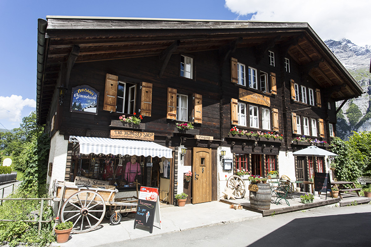
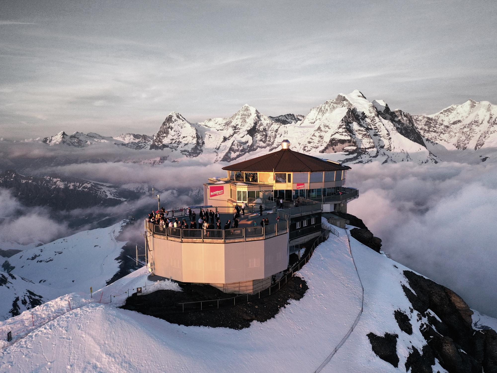
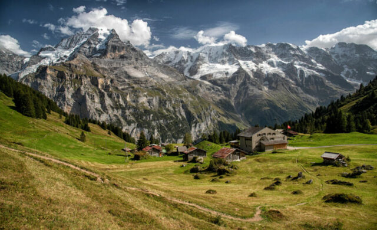

Visit the Pension Gimmelwald Honesty Shop. The name is exactly what it sounds like, the payment relies on people’s honesty. This shop is where you can buy souvenirs, snacks and drinks, and local crafts. To purchase something, you get what you want and put your money in an envelope and drop it into the honesty box.
Full day hike to Schilthorn. Make sure you hike on a clear day, otherwise you will just see clouds! At the top of Schilthorn, about a five hour hike from Gimmelwald, there is a restaurant named Piz Gloria, where you can enjoy a delicious meal and breathtaking views.
Walk through the village. While it may seem simple, a quiet peaceful walk through the village, visiting the cows, and seeing the beautiful scenery is a wonderful way to spend some time during your relaxing vacation.
